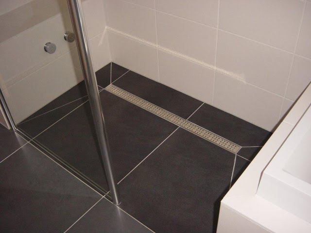
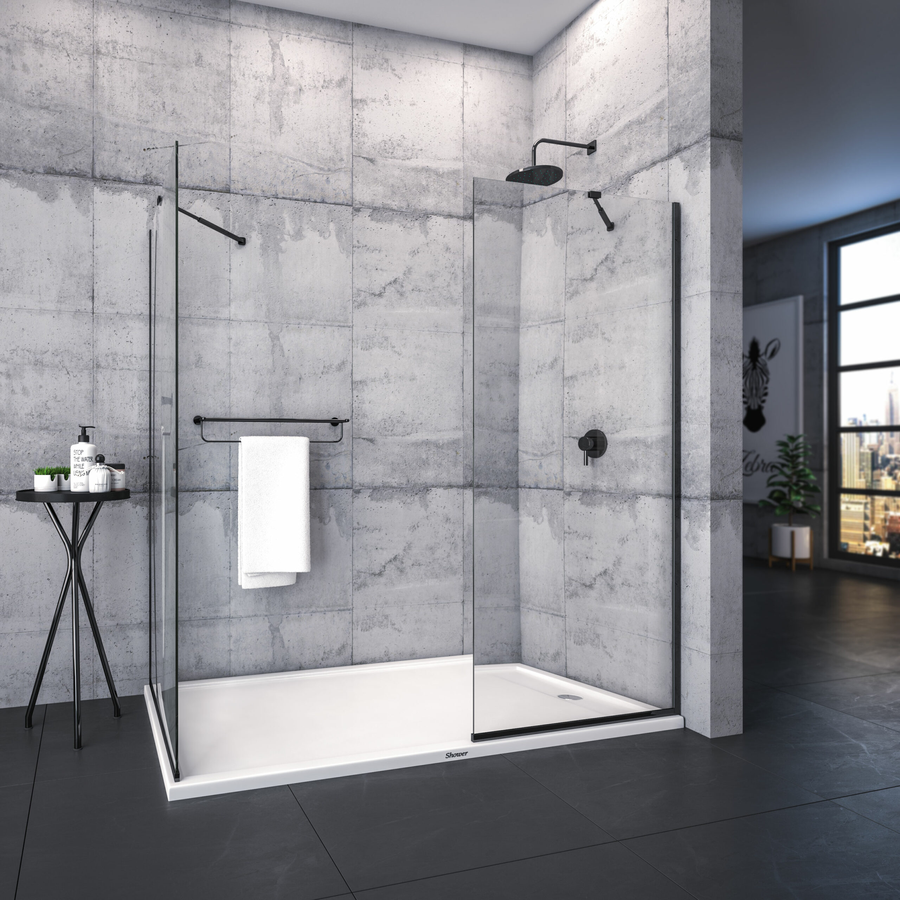

Kako odabrati i postaviti keramičke pločice za tuš kabinu

1. Odabir pločica za tuš kabinu
Kada birate pločice, važno je obratiti pažnju na materijal, završnu obradu i dimenzije:
- Vodootporni materijali: Pločice za tuš kabinu moraju biti izrađene od materijala otpornog na vlagu, poput keramike, porculana ili staklenih pločica.
- Protuklizne pločice: Za podove birajte pločice s protukliznom završnom obradom kako biste osigurali sigurnost.
- Dimenzije i oblik: Manje pločice na podu olakšavaju drenažu i prilagodbu nagibu prema odvodu.
2. Priprema podloge
Prije postavljanja pločica, potrebno je osigurati pravilnu pripremu podloge:
- Čišćenje: Uklonite sve nečistoće, staru podlogu i ostatke ljepila.
- Hidroizolacija: Primijenite hidroizolacijski premaz kako biste spriječili prodor vlage.
3. Postavljanje pločica
Postavljanje pločica u tuš kabinu zahtijeva preciznost i pravilnu tehniku:
- Nanošenje ljepila: Upotrijebite zupčastu lopaticu za ravnomjerno nanošenje ljepila.
- Poravnavanje: Postavljajte pločice s razmacima za fugiranje i provjeravajte ravnost.

4. Fugiranje i završni koraci
- Fugiranje: Nakon postavljanja, nanesite fugnu masu u praznine između pločica.
- Čišćenje: Uklonite višak fugne mase vlažnom spužvom i ostavite da se osuši.
- Redovno održavanje: Koristite sredstva za čišćenje kako biste pločice održali sjajnim i dugotrajnim.